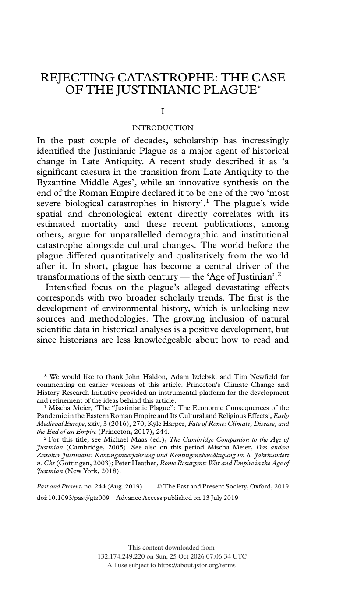
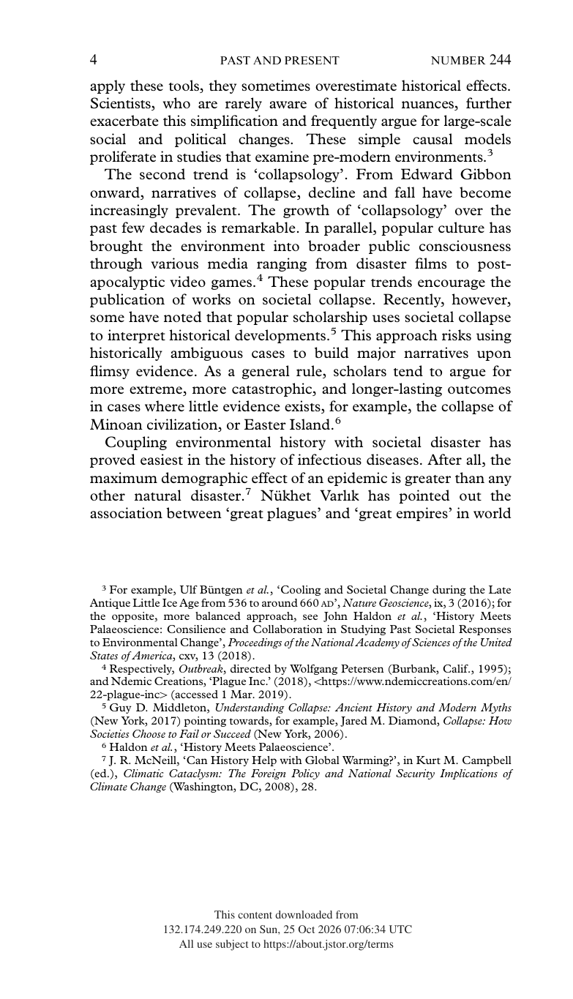

<!DOCTYPE html>
<html lang="en">
<head>
  <meta charset="UTF-8">
  <meta name="viewport" content="width=device-width, initial-scale=1.0">
  <meta name="description" content="Rejecting Catastrophe: The Case of the Justinianic Plague. Scholarly Article A3.35 for Unit 2: Second Wave Civilizations.">
  <meta name="theme-color" content="#7A3B23">
  <title>Scholarly Article A3.35 | Rejecting Catastrophe: The Case of the Justinianic Plague</title>
  <link rel="canonical" href="https://www.thegarzaarchive.org/AP-World-History/Unit_2/Sources/Scholarly_Articles/A3.35_Rejecting_Catastrophe_Case_Justinianic_Plague.html">
  <link rel="preconnect" href="https://fonts.googleapis.com">
  <link rel="preconnect" href="https://fonts.gstatic.com" crossorigin>
  <link href="https://fonts.googleapis.com/css2?family=Cinzel:wght@500;600;700&amp;family=Cormorant+Garamond:ital,wght@0,500;0,600;0,700;1,500;1,600&amp;family=Inter:wght@500;600;700;800&amp;display=swap" rel="stylesheet">
  <style>
    :root {
      --forest: #7A3B23;
      --forest-mid: #B0562F;
      --coral: #7C9473;
      --coral-light: #B7C7AE;
      --cream: #F5F1E9;
      --paper: #FCFBF8;
      --mint: #F1F4EF;
      --sage: #EBD5CB;
      --ink: #432013;
      --muted: #7D5A4D;
      --shadow: 0 22px 55px rgba(73, 35, 21, .14);
      --heading: 'Cinzel', Georgia, serif;
      --body: 'Cormorant Garamond', Georgia, serif;
      --ui: Inter, Arial, sans-serif;
      --coral-text: #A5512C;
    }

    * { box-sizing: border-box; }
    html { scroll-behavior: smooth; }
    body {
      margin: 0;
      min-width: 320px;
      background: var(--cream);
      color: var(--ink);
      font-family: var(--body);
      font-size: 19px;
      line-height: 1.65;
    }
    body::before {
      content: '';
      position: fixed;
      inset: 0;
      z-index: -1;
      background:
        radial-gradient(circle at 94% 4%, rgba(124, 148, 115, .12), transparent 25rem),
        linear-gradient(145deg, rgba(255,255,255,.55), transparent 48%);
      pointer-events: none;
    }
    a { color: inherit; }
    :focus-visible { outline: 3px solid var(--coral-light); outline-offset: 3px; }
    .skip-link {
      position: fixed;
      top: -5rem;
      left: 1rem;
      z-index: 1000;
      padding: .65rem 1rem;
      background: var(--paper);
      color: var(--forest);
      font: 700 .75rem var(--ui);
    }
    .skip-link:focus { top: 1rem; }

    .archive-bar {
      position: sticky;
      top: 0;
      z-index: 100;
      color: var(--paper);
      background: rgba(122, 59, 35, .98);
      border-bottom: 4px solid var(--coral);
      box-shadow: 0 4px 18px rgba(73, 35, 21, .18);
    }
    .archive-bar__inner {
      width: min(1120px, calc(100% - 2rem));
      min-height: 64px;
      margin: 0 auto;
      display: flex;
      align-items: center;
      justify-content: space-between;
      gap: 1.5rem;
    }
    .archive-link {
      display: inline-flex;
      align-items: center;
      gap: .7rem;
      color: var(--paper);
      font: 700 .72rem var(--ui);
      letter-spacing: .12em;
      text-decoration: none;
      text-transform: uppercase;
    }
    .archive-link span { color: var(--coral-light); font-size: 1.1rem; }
    .archive-link:hover { color: var(--coral-light); }
    .archive-meta {
      color: var(--sage);
      font: 700 .68rem var(--ui);
      letter-spacing: .12em;
      text-transform: uppercase;
    }
    .reading-progress {
      position: absolute;
      left: 0;
      bottom: -4px;
      width: 0;
      height: 4px;
      background: var(--coral-light);
      transform-origin: left center;
    }

    .document-shell {
      position: relative;
      width: min(940px, calc(100% - 2rem));
      margin: clamp(1.5rem, 4vw, 3.5rem) auto 4rem;
      overflow: hidden;
      background: var(--paper);
      border: 1px solid var(--sage);
      border-top: 7px solid var(--coral);
      box-shadow: var(--shadow);
    }
    .document-shell::before {
      content: attr(data-code);
      position: absolute;
      top: 2rem;
      right: 1.5rem;
      color: rgba(176, 86, 47, .055);
      font: 700 clamp(5rem, 15vw, 10rem)/.8 var(--heading);
      pointer-events: none;
    }
    .legacy-source {
      width: 100% !important;
      max-width: none !important;
      margin: 0 !important;
      background: transparent !important;
      border-collapse: collapse;
    }
    .source-content {
      position: relative;
      padding: clamp(2.25rem, 7vw, 5rem) !important;
    }
    .source-kicker {
      position: relative;
      margin: 0 0 1rem !important;
      color: var(--coral-text) !important;
      font: 800 .7rem var(--ui) !important;
      letter-spacing: .18em !important;
    }
    .source-title {
      position: relative;
      max-width: 760px;
      margin: 0 0 1rem !important;
      color: var(--forest) !important;
      font: 600 clamp(2.35rem, 6vw, 4.45rem)/1.04 var(--heading) !important;
      letter-spacing: -.025em;
      text-wrap: balance;
    }
    .source-byline {
      position: relative;
      max-width: 720px;
      margin: 0 0 2.1rem !important;
      color: var(--forest-mid) !important;
      font: 600 clamp(1rem, 2vw, 1.15rem)/1.55 var(--body) !important;
      font-style: italic !important;
    }
    .title-rule {
      margin: 0 0 2rem !important;
    }
    .title-rule td { border-top: 1px solid var(--coral) !important; }

    .context-grid {
      margin: 0 0 3rem !important;
      overflow: hidden;
      background: var(--mint) !important;
      border: 1px solid var(--sage);
      border-left: 5px solid var(--coral);
    }
    .context-grid td:first-child {
      width: 23% !important;
      padding: 1rem 1rem .75rem 1.2rem !important;
      color: var(--coral-text) !important;
      font: 800 .65rem var(--ui) !important;
      letter-spacing: .14em !important;
    }
    .context-grid td:last-child {
      padding: 1rem 1.25rem .75rem .75rem !important;
      color: var(--ink) !important;
      font: 600 .86rem/1.65 var(--ui) !important;
    }
    .context-grid tr + tr td { border-top: 1px solid var(--sage); }

    .section-heading {
      display: block !important;
      width: fit-content;
      margin: 3.6rem 0 1.4rem !important;
      padding: .45rem 0 .55rem !important;
      color: var(--forest) !important;
      border-top: 4px solid var(--coral);
      border-bottom: 1px solid var(--sage) !important;
      font: 700 clamp(1rem, 2vw, 1.25rem) var(--heading) !important;
      letter-spacing: .04em;
    }
    .section-spacer { height: 0 !important; }
    .citation-label {
      max-width: 67ch;
      margin: 1.3rem auto .4rem !important;
      color: var(--coral-text) !important;
      font: 800 .7rem var(--ui) !important;
      letter-spacing: .08em;
      text-transform: uppercase;
    }
    .document-subheading {
      max-width: 67ch;
      margin: 1.8rem auto .65rem !important;
      color: var(--forest-mid) !important;
      font: 700 .84rem/1.5 var(--ui) !important;
      letter-spacing: .035em;
    }
    .legacy-source p {
      max-width: 67ch;
      margin: 0 auto 1.05em !important;
      color: var(--ink) !important;
      font: 500 clamp(1.08rem, 1.8vw, 1.22rem)/1.78 var(--body) !important;
    }
    .legacy-source p a {
      color: var(--forest-mid) !important;
      text-decoration-color: var(--coral-light) !important;
      text-underline-offset: .18em;
      word-break: break-word !important;
    }
    .legacy-source p a:hover { color: var(--coral-text) !important; }

    .editorial-note {
      max-width: 67ch;
      margin: 1.4rem auto 2.5rem !important;
      background: var(--mint) !important;
      border: 1px solid var(--sage);
    }
    .editorial-note td {
      padding: 1rem 1.2rem !important;
      color: var(--forest-mid) !important;
      border-left: 4px solid var(--coral) !important;
      font: 600 .79rem/1.65 var(--ui) !important;
    }
    .source-media {
      max-width: 67ch;
      margin: 1.25rem auto 2.5rem !important;
      background: var(--mint) !important;
      border: 1px solid var(--sage);
    }
    .source-media td { padding: 1rem !important; }
    .source-media img {
      display: block;
      width: auto !important;
      max-width: 100% !important;
      height: auto !important;
      margin: 0 auto;
    }
    .source-media td[style*="font-family"] {
      color: var(--muted) !important;
      font: 600 .72rem/1.55 var(--ui) !important;
    }
    .source-footer { padding: 0 clamp(2.25rem, 7vw, 5rem) 2rem !important; }
    .source-imprint { margin-top: 1rem !important; }
    .source-imprint td {
      padding-top: 1rem !important;
      color: var(--muted) !important;
      border-top: 1px solid var(--sage) !important;
      font: 700 .63rem var(--ui) !important;
      letter-spacing: .12em !important;
    }
    .document-actions {
      width: min(940px, calc(100% - 2rem));
      margin: -2rem auto 4rem;
      display: flex;
      justify-content: center;
    }
    .document-actions a {
      display: inline-flex;
      align-items: center;
      gap: .65rem;
      padding: .8rem 1.1rem;
      color: var(--forest);
      border: 1px solid var(--sage);
      background: var(--paper);
      font: 800 .68rem var(--ui);
      letter-spacing: .12em;
      text-decoration: none;
      text-transform: uppercase;
    }
    .document-actions a:hover { border-color: var(--coral); color: var(--coral-text); }

    @media (max-width: 680px) {
      .archive-bar__inner { min-height: 58px; }
      .archive-meta { display: none; }
      .document-shell { width: calc(100% - 1rem); margin-top: .75rem; }
      .source-content { padding: 2rem 1.25rem !important; }
      .document-shell::before { top: 1.2rem; right: .35rem; }
      .source-title { font-size: clamp(2rem, 10vw, 2.85rem) !important; }
      .context-grid tr, .context-grid td { display: block; width: 100% !important; }
      .context-grid td:first-child { padding-bottom: .25rem !important; }
      .context-grid td:last-child { padding: 0 1.2rem 1rem !important; }
      .context-grid tr + tr td:last-child { border-top: 0; }
      .source-footer { padding: 0 1.25rem 1.5rem !important; }
      .document-actions { margin-top: -2.4rem; }
    }

    @media print {
      @page { margin: .65in; }
      body { background: #fff; font-size: 11pt; }
      body::before, .archive-bar, .skip-link, .document-actions, .document-shell::before { display: none !important; }
      .document-shell { width: 100%; margin: 0; border: 0; box-shadow: none; }
      .source-content { padding: 0 !important; }
      .legacy-source p { max-width: none; font-size: 11pt !important; line-height: 1.5 !important; }
      .context-grid, .editorial-note { break-inside: avoid; }
      .source-footer { padding: 1rem 0 0 !important; }
    }

    @media (prefers-reduced-motion: reduce) {
      html { scroll-behavior: auto; }
    }

  
    .source-table { max-width: 67ch; margin: 0 auto 1.05em; border-collapse: collapse; font: 500 1.1rem/1.6 var(--body); color: var(--ink); }
    .source-table td { padding: .2rem .9rem .2rem 0; border-bottom: 1px dotted var(--sage); }
    .source-table td:last-child { text-align: right; }
    .legacy-source blockquote {
      max-width: 62ch; margin: 0 auto 1.2em !important; padding: .9rem 1.2rem;
      background: var(--mint); border-left: 4px solid var(--coral);
    }
    .legacy-source blockquote p { max-width: none; margin: 0 0 .6em !important; }
    .legacy-source blockquote p:last-child { margin-bottom: 0 !important; }
    .page-text { max-width: 67ch; margin: -1rem auto 2.2rem; border: 1px solid var(--sage); background: var(--paper); }
    .page-text summary { cursor: pointer; padding: .7rem 1rem; color: var(--forest-mid); font: 700 .72rem var(--ui); letter-spacing: .06em; text-transform: uppercase; }
    .page-text[open] summary { border-bottom: 1px solid var(--sage); }
    .page-text p { margin: .9rem 1.1rem !important; font: 500 1rem/1.6 var(--body) !important; white-space: pre-line; }
    .legacy-source sup { font: 700 .68em var(--ui); line-height: 0; }
  </style>
</head>
<body id="top">
  <a class="skip-link" href="#document">Skip to document</a>
  <nav class="archive-bar" aria-label="Scholarly Article navigation">
    <div class="archive-bar__inner">
      <a class="archive-link" href="https://www.thegarzaarchive.org/AP-World-History/Unit_2/Sources/Scholarly_Articles/"><span aria-hidden="true">←</span> Scholarly Article Archive</a>
      <div class="archive-meta">Unit 2 · Chapter 3 · A3.35</div>
    </div>
    <div class="reading-progress" id="reading-progress" aria-hidden="true"></div>
  </nav>
  <main class="document-shell" id="document" data-code="A3.35">
    <article aria-labelledby="source-title">
<table role="presentation" width="100%" cellpadding="0" cellspacing="0" border="0" style="background-color:#F5F1E9; max-width:820px; margin:0 auto;" class="legacy-source">
  <tr><td style="padding:32px 36px 20px 36px;" class="source-content">
<div style="font-family:Arial, Helvetica, sans-serif; color:#A5512C; font-size:13px; font-weight:700; letter-spacing:0.5px; text-transform:uppercase; margin-bottom:8px;" class="source-kicker">Scholarly Article A3.35</div>
<div style="font-family:Georgia, 'Times New Roman', serif; color:#7A3B23; font-size:30px; font-weight:700; line-height:1.2; margin-bottom:8px;" class="source-title" id="source-title" role="heading" aria-level="1">Rejecting Catastrophe: The Case of the Justinianic Plague</div>
<div style="font-family:Arial, Helvetica, sans-serif; color:#A5512C; font-size:14px; font-weight:700; line-height:1.5; margin-bottom:16px;" class="source-byline">Lee Mordechai and Merle Eisenberg</div>
<table role="presentation" width="100%" cellpadding="0" cellspacing="0" border="0" style="margin-bottom:20px;" class="title-rule"><tr><td style="border-top:4px solid #7C9473; font-size:1px; line-height:1px;">&nbsp;</td></tr></table>
<table role="presentation" width="100%" cellpadding="0" cellspacing="0" border="0" style="background-color:#B7C7AE; border-collapse:collapse; margin-bottom:26px;" class="context-grid">
  <tr>
    <td valign="top" style="width:22%; padding:12px 12px 8px 14px; font-family:Arial, Helvetica, sans-serif; color:#7A3B23; font-size:12px; font-weight:700; letter-spacing:1px; text-transform:uppercase;">ARTICLE</td>
    <td valign="top" style="padding:12px 14px 8px 12px; font-family:Arial, Helvetica, sans-serif; color:#7A3B23; font-size:13.5px; line-height:1.55;">Rejecting Catastrophe: The Case of the Justinianic Plague</td>
  </tr>
  <tr>
    <td valign="top" style="width:22%; padding:8px 12px 8px 14px; font-family:Arial, Helvetica, sans-serif; color:#7A3B23; font-size:12px; font-weight:700; letter-spacing:1px; text-transform:uppercase;">JOURNAL</td>
    <td valign="top" style="padding:8px 14px 8px 12px; font-family:Arial, Helvetica, sans-serif; color:#7A3B23; font-size:13.5px; line-height:1.55;"><em>Past &amp; Present</em> 244 (2019)</td>
  </tr>
  <tr>
    <td valign="top" style="width:22%; padding:8px 12px 8px 14px; font-family:Arial, Helvetica, sans-serif; color:#7A3B23; font-size:12px; font-weight:700; letter-spacing:1px; text-transform:uppercase;">EXCERPT</td>
    <td valign="top" style="padding:8px 14px 8px 12px; font-family:Arial, Helvetica, sans-serif; color:#7A3B23; font-size:13.5px; line-height:1.55;">Original journal pages 3–4</td>
  </tr>
  <tr>
    <td valign="top" style="width:22%; padding:8px 12px 8px 14px; font-family:Arial, Helvetica, sans-serif; color:#7A3B23; font-size:12px; font-weight:700; letter-spacing:1px; text-transform:uppercase;">JSTOR</td>
    <td valign="top" style="padding:8px 14px 8px 12px; font-family:Arial, Helvetica, sans-serif; color:#7A3B23; font-size:13.5px; line-height:1.55;"><a href="https://www.jstor.org/stable/10.2307/26802040">https://www.jstor.org/stable/10.2307/26802040</a></td>
  </tr>
  <tr>
    <td valign="top" style="width:22%; padding:8px 12px 8px 14px; font-family:Arial, Helvetica, sans-serif; color:#7A3B23; font-size:12px; font-weight:700; letter-spacing:1px; text-transform:uppercase;">ESSAY PROMPTS</td>
    <td valign="top" style="padding:8px 14px 8px 12px; font-family:Arial, Helvetica, sans-serif; color:#7A3B23; font-size:13.5px; line-height:1.55;">3.5</td>
  </tr>
  <tr>
    <td valign="top" style="width:22%; padding:8px 12px 12px 14px; font-family:Arial, Helvetica, sans-serif; color:#7A3B23; font-size:12px; font-weight:700; letter-spacing:1px; text-transform:uppercase;">ARGUMENT ROLES</td>
    <td valign="top" style="padding:8px 14px 12px 12px; font-family:Arial, Helvetica, sans-serif; color:#7A3B23; font-size:13.5px; line-height:1.55;">3.5.3 Counters; 3.5.4 Supports</td>
  </tr>
</table>
<div style="display:inline-block; font-family:Arial, Helvetica, sans-serif; color:#A5512C; font-size:17px; font-weight:700; border-bottom:2px solid #7C9473; padding-bottom:4px; margin:6px 0 14px 0;" class="section-heading" role="heading" aria-level="2">Selection Overview</div>
<p style="font-family:Georgia, 'Times New Roman', serif; color:#7A3B23; font-size:15px; line-height:1.7; margin:0 0 14px 0; ">Mordechai and Eisenberg challenge the "maximalist interpretation" that the Justinianic Plague (c. 541–750) killed a third to half of the Mediterranean population and helped end antiquity. Re-examining the literary sources, archaeology, and ancient DNA, they accept that the plague caused high mortality in some places and times but argue that its effects "remained limited beyond the local and short term," and that sixth-century changes are better explained as adaptation to "the fractured political realities of the fifth century."</p>
<div style="display:inline-block; font-family:Arial, Helvetica, sans-serif; color:#A5512C; font-size:17px; font-weight:700; border-bottom:2px solid #7C9473; padding-bottom:4px; margin:6px 0 14px 0;" class="section-heading" role="heading" aria-level="2">Excerpt Format</div>
<p style="font-family:Georgia, 'Times New Roman', serif; color:#7A3B23; font-size:15px; line-height:1.7; margin:0 0 14px 0; ">The next two pages are exact facsimiles from the supplied article PDF. Original pagination and the author's note system are preserved.</p>
<div style="display:inline-block; font-family:Arial, Helvetica, sans-serif; color:#A5512C; font-size:17px; font-weight:700; border-bottom:2px solid #7C9473; padding-bottom:4px; margin:6px 0 14px 0;" class="section-heading" role="heading" aria-level="2">Facsimile Excerpt</div>
<table role="presentation" width="100%" cellpadding="0" cellspacing="0" border="0" style="margin:6px 0 24px 0;" class="source-media"><tr>
  <td style="text-align:center; padding:14px; background-color:#FFFFFF; border:1px solid #B7C7AE;">
    
    <div style="font-family:Arial, Helvetica, sans-serif; color:#7A3B23; font-size:12.5px; line-height:1.55; margin-top:10px; text-align:left;">Original journal page 3.</div>
  </td>
</tr></table>
<details class="page-text"><summary>Text of this page (original journal page 3)</summary>
<p>REJECTING CATASTROPHE: THE CASE
OF THE JUSTINIANIC PLAGUE*
I
INTRODUCTION
In the past couple of decades, scholarship has increasingly
identified the Justinianic Plague as a major agent of historical
change in Late Antiquity. A recent study described it as ‘a
significant caesura in the transition from Late Antiquity to the
Byzantine Middle Ages’, while an innovative synthesis on the
end of the Roman Empire declared it to be one of the two ‘most
severe biological catastrophes in history’.1 The plague’s wide
spatial and chronological extent directly correlates with its
estimated mortality and these recent publications, among
others, argue for unparallelled demographic and institutional
catastrophe alongside cultural changes. The world before the
plague differed quantitatively and qualitatively from the world
after it. In short, plague has become a central driver of the
transformations of the sixth century — the ‘Age of Justinian’.2
Intensified focus on the plague’s alleged devastating effects
corresponds with two broader scholarly trends. The first is the
development of environmental history, which is unlocking new
sources and methodologies. The growing inclusion of natural
scientific data in historical analyses is a positive development, but
since historians are less knowledgeable about how to read and
* We would like to thank John Haldon, Adam Izdebski and Tim Newfield for
commenting on earlier versions of this article. Princeton’s Climate Change and
History Research Initiative provided an instrumental platform for the development
and refinement of the ideas behind this article.
1 Mischa Meier, ‘The ‘‘Justinianic Plague’’: The Economic Consequences of the
Pandemic in the Eastern Roman Empire and Its Cultural and Religious Effects’, Early
Medieval Europe, xxiv, 3 (2016), 270; Kyle Harper, Fate of Rome: Climate, Disease, and
the End of an Empire (Princeton, 2017), 244.
2 For this title, see Michael Maas (ed.), The Cambridge Companion to the Age of
Justinian (Cambridge, 2005). See also on this period Mischa Meier, Das andere
Zeitalter Justinians: Kontingenzerfahrung und Kontingenzbewa¨ltigung im 6. Jahrhundert
n. Chr (Go¨ttingen, 2003); Peter Heather, Rome Resurgent: War and Empire in the Age of
Justinian (New York, 2018).
Past and Present, no. 244 (Aug. 2019)
 The Past and Present Society, Oxford, 2019
doi:10.1093/pastj/gtz009
Advance Access published on 13 July 2019</p></details>
<table role="presentation" width="100%" cellpadding="0" cellspacing="0" border="0" style="margin:6px 0 24px 0;" class="source-media"><tr>
  <td style="text-align:center; padding:14px; background-color:#FFFFFF; border:1px solid #B7C7AE;">
    
    <div style="font-family:Arial, Helvetica, sans-serif; color:#7A3B23; font-size:12.5px; line-height:1.55; margin-top:10px; text-align:left;">Original journal page 4.</div>
  </td>
</tr></table>
<details class="page-text"><summary>Text of this page (original journal page 4)</summary>
<p>apply these tools, they sometimes overestimate historical effects.
Scientists, who are rarely aware of historical nuances, further
exacerbate this simplification and frequently argue for large-scale
social and political changes. These simple causal models
proliferate in studies that examine pre-modern environments.3
The second trend is ‘collapsology’. From Edward Gibbon
onward, narratives of collapse, decline and fall have become
increasingly prevalent. The growth of ‘collapsology’ over the
past few decades is remarkable. In parallel, popular culture has
brought the environment into broader public consciousness
through various media ranging from disaster films to post-
apocalyptic video games.4 These popular trends encourage the
publication of works on societal collapse. Recently, however,
some have noted that popular scholarship uses societal collapse
to interpret historical developments.5 This approach risks using
historically ambiguous cases to build major narratives upon
flimsy evidence. As a general rule, scholars tend to argue for
more extreme, more catastrophic, and longer-lasting outcomes
in cases where little evidence exists, for example, the collapse of
Minoan civilization, or Easter Island.6
Coupling environmental history with societal disaster has
proved easiest in the history of infectious diseases. After all, the
maximum demographic effect of an epidemic is greater than any
other natural disaster.7 Nu¨khet Varlık has pointed out the
association between ‘great plagues’ and ‘great empires’ in world
3 For example, Ulf Bu¨ntgen et al., ‘Cooling and Societal Change during the Late
Antique Little Ice Age from 536 to around 660 AD’, Nature Geoscience, ix, 3 (2016); for
the opposite, more balanced approach, see John Haldon et al., ‘History Meets
Palaeoscience: Consilience and Collaboration in Studying Past Societal Responses
to Environmental Change’, Proceedings of the National Academy of Sciences of the United
States of America, cxv, 13 (2018).
4 Respectively, Outbreak, directed by Wolfgang Petersen (Burbank, Calif., 1995);
and Ndemic Creations, ‘Plague Inc.’ (2018),5https://www.ndemiccreations.com/en/
22-plague-inc4(accessed 1 Mar. 2019).
5 Guy D. Middleton, Understanding Collapse: Ancient History and Modern Myths
(New York, 2017) pointing towards, for example, Jared M. Diamond, Collapse: How
Societies Choose to Fail or Succeed (New York, 2006).
6 Haldon et al., ‘History Meets Palaeoscience’.
7 J. R. McNeill, ‘Can History Help with Global Warming?’, in Kurt M. Campbell
(ed.), Climatic Cataclysm: The Foreign Policy and National Security Implications of
Climate Change (Washington, DC, 2008), 28.
4
PAST AND PRESENT
NUMBER 244</p></details>
<div style="display:inline-block; font-family:Arial, Helvetica, sans-serif; color:#A5512C; font-size:17px; font-weight:700; border-bottom:2px solid #7C9473; padding-bottom:4px; margin:6px 0 14px 0;" class="section-heading" role="heading" aria-level="2">Chicago Citations</div>
<div style="font-family:Arial, Helvetica, sans-serif; color:#A5512C; font-size:13px; font-weight:700; margin:4px 0 6px 0;" class="citation-label">Bibliography entry:</div>
<p style="font-family:Georgia, 'Times New Roman', serif; color:#7A3B23; font-size:15px; line-height:1.7; margin:0 0 14px 0; padding-left:36px; text-indent:-36px;">Mordechai, Lee,  and Merle Eisenberg. “Rejecting Catastrophe: The Case of the Justinianic Plague.” <em>Past &amp; Present</em> 244 (2019): 3–50. <a href="https://www.jstor.org/stable/10.2307/26802040">https://www.jstor.org/stable/10.2307/26802040</a>.</p>
<div style="font-family:Arial, Helvetica, sans-serif; color:#A5512C; font-size:13px; font-weight:700; margin:4px 0 6px 0;" class="citation-label">Footnote citation:</div>
<p style="font-family:Georgia, 'Times New Roman', serif; color:#7A3B23; font-size:15px; line-height:1.7; margin:0 0 14px 0; ">Lee Mordechai and Merle Eisenberg, “Rejecting Catastrophe: The Case of the Justinianic Plague,” <em>Past &amp; Present</em> 244 (2019): 3–4, <a href="https://www.jstor.org/stable/10.2307/26802040">https://www.jstor.org/stable/10.2307/26802040</a>.</p>
<div style="font-family:Arial, Helvetica, sans-serif; color:#A5512C; font-size:13px; font-weight:700; margin:4px 0 6px 0;" class="citation-label">Shortened citation:</div>
<p style="font-family:Georgia, 'Times New Roman', serif; color:#7A3B23; font-size:15px; line-height:1.7; margin:0 0 14px 0; ">Mordechai and Eisenberg, “Rejecting Catastrophe,” 3–4.</p>
  </td></tr>
  <tr><td style="padding:0 36px 22px 36px;" class="source-footer">
<table role="presentation" width="100%" cellpadding="0" cellspacing="0" border="0" style="margin-top:10px;" class="source-imprint"><tr>
  <td style="padding-top:12px; border-top:1px solid #7C9473; font-family:Arial, Helvetica, sans-serif; color:#A5512C; font-size:11px; letter-spacing:1px; text-transform:uppercase; text-align:center;">UNIT 2 · SECOND WAVE CIVILIZATIONS | HISTORY B1 | DANIEL GARZA</td>
</tr></table>
  </td></tr>
</table>

    </article>
  </main>
  <div class="document-actions">
    <a href="https://www.thegarzaarchive.org/AP-World-History/Unit_2/Sources/Scholarly_Articles/"><span aria-hidden="true">←</span> Return to the Scholarly Article Archive</a>
  </div>
  <script>
    (() => {
      const progress = document.getElementById('reading-progress');
      const updateProgress = () => {
        const scrollable = document.documentElement.scrollHeight - window.innerHeight;
        const percent = scrollable > 0 ? Math.min(100, Math.max(0, window.scrollY / scrollable * 100)) : 0;
        progress.style.width = `${percent}%`;
      };
      updateProgress();
      window.addEventListener('scroll', updateProgress, { passive: true });
      window.addEventListener('resize', updateProgress);
    })();
  </script>
</body>
</html>
